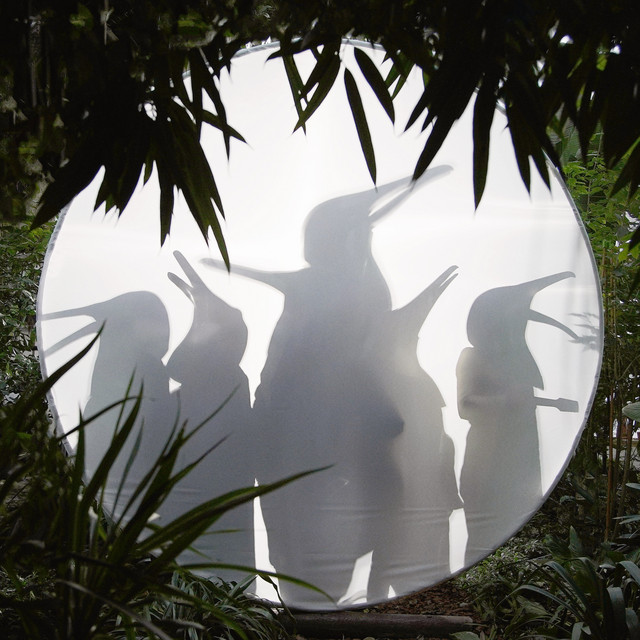

Penguin Cafe - Rain Before Seven



Información del álbum facilitada por discogs.com:
Fecha de lanzamiento: 2023
Géneros: Rock, Pop
Estilos: Indie Rock
Pais: Denmark
Votos: Media de 2.0 con 1 votos
Sello: Mega Records
Phonographic Copyright (p): ARS Productions Belgium
Copyright (c): ARS Productions Belgium
Tracklist:
A1. Welcome to London 4:49
A2. Temporary Shelter from the Storm 4:56
A3. In Re Budd 4:23
A4. Second Variety 3:54
A5. Galahad 6:11
B1. Might Be Something 6:30
B2. No One Really Leaves… 4:55
B3. Find Your Feet 4:18
B4. Lamborghini 754 4:24
B5. Goldfinch Yodel 4:50